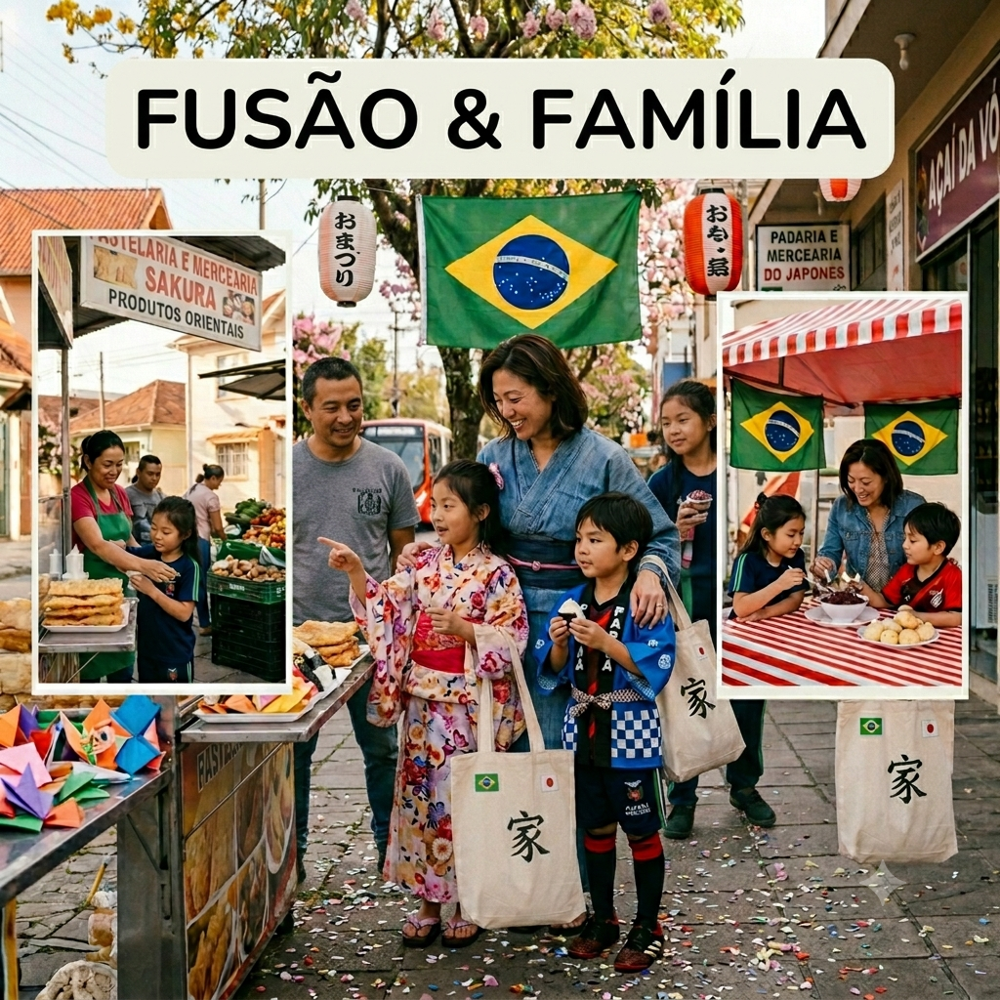

Meu primeiro post
Por:Eloize c.s.Prado
sejam bem vindos ao meu novo blog, aqui vamos apreder e conhecer curiosidades da vida dos Asiáticos no Brasil
vou compartilhar curiosidades que conheço sobre a vida de asiáticos no Brasil

Por:Eloize c.s.Prado
sejam bem vindos ao meu novo blog, aqui vamos apreder e conhecer curiosidades da vida dos Asiáticos no Brasil